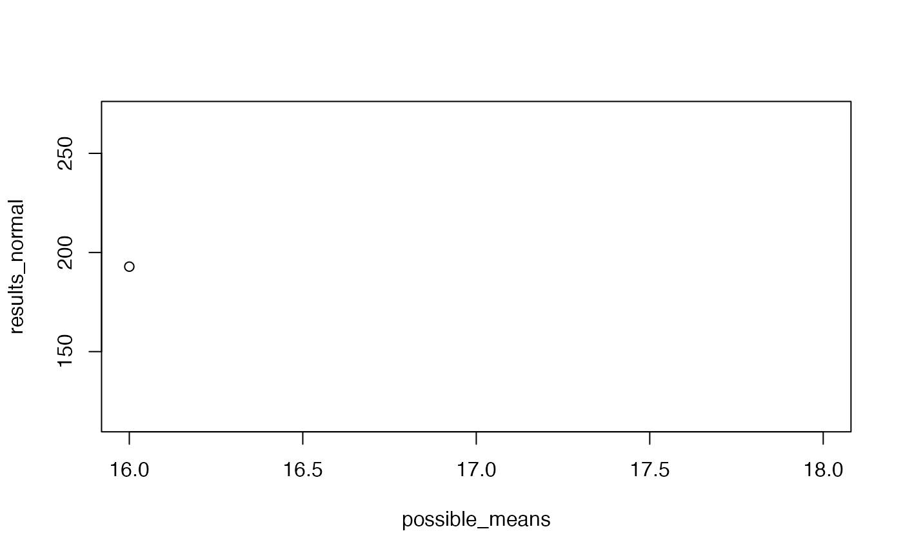

R/dentist.R
dent_likelihood.RdDents the likelihood surface This takes any values that are better (lower) than the desired negative log likelihood and reflects them across the best_neglnL + delta line, "denting" the likelihood surface.
dent_likelihood(neglnL, best_neglnL, delta = 2)The transformed negative log likelihood
sims <- stats::rnorm(100, mean=17)
possible_means <- seq(from=16, to=18, length.out=100)
results_normal <- rep(NA, length(possible_means))
results_dented <- results_normal
dnorm_to_run <- function(par, sims) {
return(-sum(dnorm(x=sims, mean=par, log=TRUE)))
}
best_neglnL <- optimize(dnorm_to_run,interval=range(possible_means),
sims=sims, maximum=FALSE)$objective
for (i in seq_along(possible_means)) {
results_normal[i] <- dnorm_to_run(possible_means[i], sims=sims)
results_dented[i] <- dent_likelihood(results_normal[i], best_neglnL=best_neglnL, delta=2)
}
#> Error in dent_likelihood(results_normal[i], best_neglnL = best_neglnL, delta = 2): could not find function "dent_likelihood"
plot(possible_means, results_normal)
lines(possible_means, results_dented)
